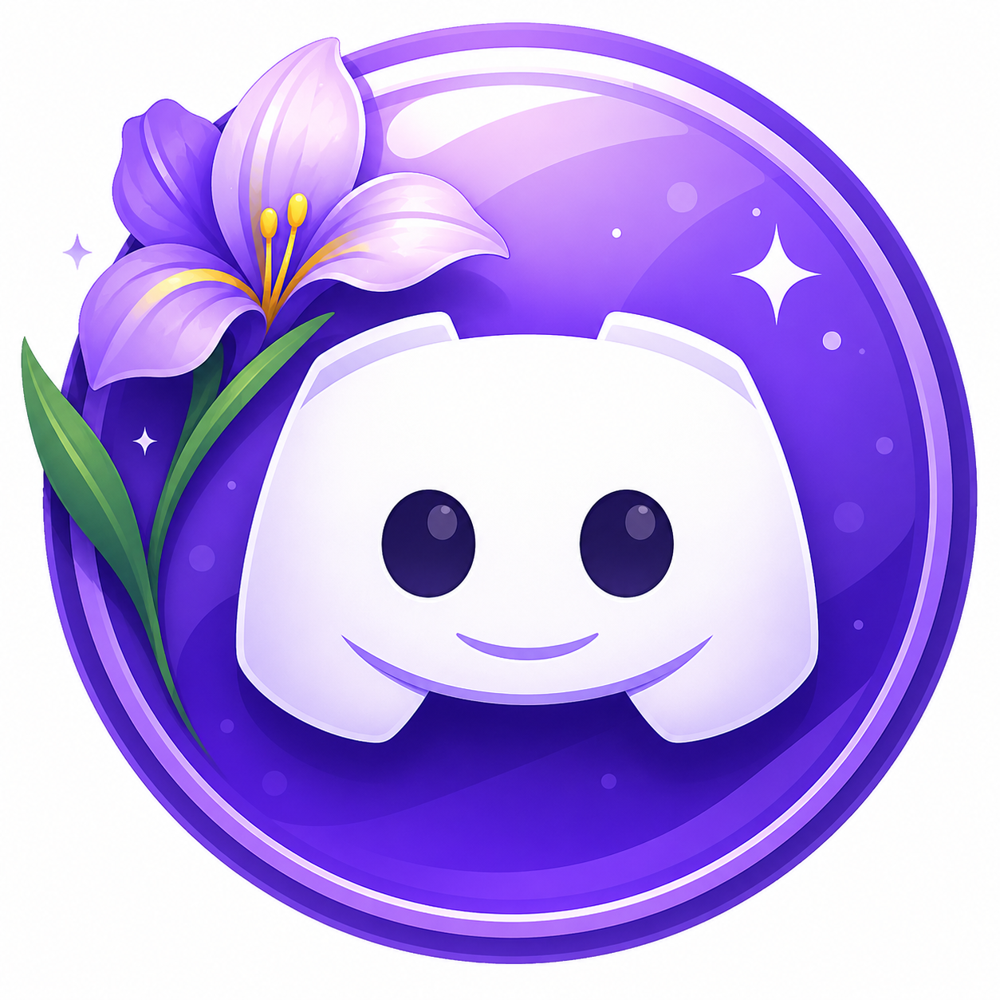

실시간 공지 알림
새로운 공지가 올라오면 Discord에서 바로 알림을 받습니다.

IRISDiscord University Notice Service
IRIS는 대학 공지를 자동으로 수집해 Discord로 전달하는 봇입니다.카테고리 알림과 키워드 DM으로 필요한 공지만 빠르게 받아보세요.
새로운 공지가 올라오면 Discord에서 바로 알림을 받습니다.
카테고리별 Discord 채널과 역할을 연결하고 알림을 받습니다.
관심 키워드가 포함된 제목의 공지를 개인 DM으로 받습니다.
Discord에서 간편하게 키워드와 카테고리 구독을 관리합니다.
공지 사이트 정보를 입력하고 크롤링할 Selector를 설정하세요.
도움이 필요하신가요?
IRIS가 이제 공지를 감지하여 설정한 Discord 채널로 알림을 보냅니다.
/setup 관리자 설정 (관리자 전용)
/help 명령어 목록 보기
/subscribe 카테고리 구독/해제
/keyword 키워드 등록/관리
등록된 키워드는 관련 공지를 DM으로 보내드립니다.